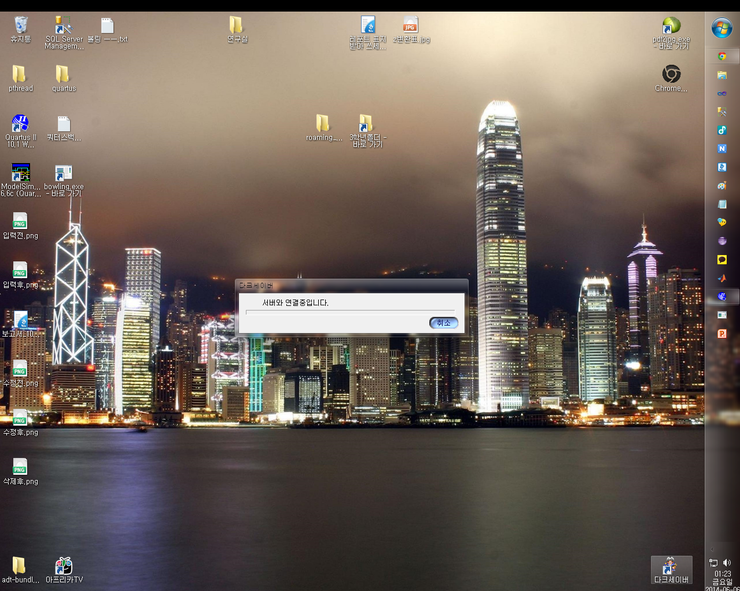

그래서 그냥 대충 끄적끄적거려봤습니다.
만약 정액제로 된다면 카페인원 1300여명중에 절반만 꾸준히 해도 성공이라고 생각합니다
그러면 대략 750명이네요.
그리고 정액제의 요금은 제가 생각할 사항은 아니지만
와우같은 게임은 한달에 대략 2만원정도입니다.
리니지와 리니지2는 3만원정도이고 아이온은 2만원쯤이라고 알고있습니다
혹시 틀려도 대략 이정도라는 개념을 잡기 위해서니까 대략이라고 생각해주세요
그러면 한달에 2만원이라고 잡으면 한달고정수익이 1500만원입니다
그러면 1년에 1억8천이네요.
여기서 부활얍카 게임가드 운영비가 1년에 2천만원이라고 했으니까 빼면 1억6천이네요
게임 서버를 운영하는거는 얼마가 드는지 잘 몰라서 지식인에 찾아봤습니다
리니지 2 프리서버 동접천명이상 서버 견적을 찾았는데 대략 4천4백만원정도 나오네요
그러면 맨 처음 1년에는 대략 1억2천 약간 안되게 남습니다.
2년후부터는 1억6천정도 남고요
그러면 대략 한달에 천만원, 천삼백만원 정도 남았습니다
이정도는 장비 업그레이드, 사무실, 전기세, 인건비 하면 솔직히 힘들거 같습니다.
최소임금 5210원주고 하루에 9시간씩 한달 풀근무만 해도 140만원이네요
현실적으로 어려움이 따릅니다
그러면 정액제가 아니라 부분유료화로 생각해볼게요
부분유료화로 생각할 수 있는거는 역시
경험치2배, 돈2배, 마을 혹은 시나리오간 이동(천막에서 파는 주황색 돌 있지않았나요?)
이정도 있지 않을까요?
근데 이정도는 너무 부족합니다
그러면 다양한 컨텐츠가 도입되어야겠네요
아이템의 강화라든가, 스킨이라든가, 내구도관련, 퀵, 용병업그레이드, 닥세사이다(살려주는 아이템이 이거 맞나요?)
이런게 유료화가 되어야겠네요
그런데 이정도로 과연 한달에 1500만원 이상이 나올지는 사실 잘 모르겠습니다.
하루에 50만원이상 꾸준히 벌어야되는데... 쉽지가 않네요
게다가 다크세이버는 누적형DB쪽으로 생각할 수 있습니다. 롤처럼 로비에서 최소한의 채팅만 하는게 아니라
접속하는 그 즉시 패킷을 계속해서 주고받는 시스템이기 때문에 서버의 패킷양을 무시할 수 없습니다.
그렇기때문에 이거는 주사위의 잔영이나 롤처럼 로비 시스템이 도입되어야 할 필요가 있다고 생각하구요
게다가 생각할 수 없는 많은 변수가 있습니다
지금은 라피스로 바뀌어버린 게임의 소스를 다시 돌려놓는 과정이 있네요
소스가 어떻게 바뀌었을지는 상상도 안되네요
게다가 나온지 10년이상 지난 게임의 소스가 있을거라고는 생각하기 힘들구요
여기는 거의 새 게임을 만드는 수준이라고 생각됩니다
얍카같은 경우는 개발자분이 적극적으로 나서셨지만 여기는 그럴 상황이 안되죠
결국은 예전과 그래픽과 사운드가 똑같은 게임을 얻을 순 있겠지만
여러모로 많이 바뀐 다크세이버가 될 수도 있겠네요...
aa
댓글 5
아키노리(diablo60) 2014-06-06 10:17:00
진짜 컨텐츠 부재라는 측면이 너무 크네요..만렙을 찍어도 딱히 즐길만한 컨텐츠가 카오스닉던전밖에 없다는것은 너무 큰 장벽처럼 느껴지네요..신규 유저를 유입시킬 방법이 없으니..솔직히 뭔가 창조해내는 컨텐츠 없이 내부적인것만 어떻게 뜯어고치는 것만으로는 한계가 좀 많이 느껴지네요..결국에는 투자를 통해서 새로운 컨텐츠를 만들어내는 수 밖에 없는 것 같은데..(새로운 던전이나 퀘스트, 대륙 등등) 사실 다크세이버라는 게임 특성상 맵 자체도 좁을 수 밖에 없기 때문에...게다가 다크세이버에 추가 컨텐츠를 투자할 가능성은 제로라고 봤을 때 정말 컨텐츠 부족이라는 단점을 메꾸지 못한다면 부활 자체가 힘들겠죠..정말 닥세가 부활한다면 좋겠지만 현실적으로 봤을때는 너무 힘든 상황이긴 하네요
아키노리(diablo60) 2014-06-06 10:30:00
사실 변화는 어쩔 수 없다고 봅니다. 100% 다크세이버로 부활시키기에는 너무 시대도 다르고 현실적으로도 맞지 않네요..진짜 게임의 사운드랑 그래픽, 인터페이스, 직업 정도만 내비두고 아예 새로운 게임을 개발하는 방식이 오히려 오리지날 다크세이버를 부활시키는것보다 현실적이지 않나 싶네요
zko01(zko01) 2014-06-06 14:05:00
캐릭이 너무통일되잇으니까 메이플스토리처럼 캐쉬로
캐릭도바꾸고 공격할때 표창날아가는게 세개로날아가게 타격감높인다던가 번개친다던가 밸런스 안무너질 캐쉬템을 만드는게 많이 이윤이 남는다고 생각합니다
경험치두배라던지 빛의검? 산다던지 좋은아이디어지만 쉽게키우면 그만큼 빨리질리니깐요 초반에 적용하긴 다소
그렇지않나 생각이드네요ㅎㅎ
난관이많군요ㅜㅜ
zko01(zko01) 2014-06-06 14:06:00
아무쪼록 회원들이 더많이 모이고 카페가활성화되서
좋은소식 기다려봅니다ㅜ
켄타우로스(kjwon0109) 2014-06-09 10:23:00
캐쉬 다 좋은데 제발 엔돌핀이랑 퀵은 게임자체에서만 해소가 가능하도록 됐으면 좋겠네요..